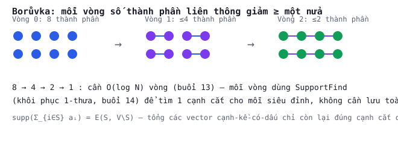

BUỔI 13 · Cấu trúc rời rạc
Đồ thị cơ bản, liên thông & Borůvka
Bài toán liên thông trên luồng cạnh động (có xoá) cần một thuật toán khác hẳn union-find truyền thống: sketch AGM.
Vì sao union-find không đủ cho luồng động
Với luồng chỉ chèn cạnh, union-find (find/union) giải quyết liên thông trong $O(N\log N)$ bit. Nhưng
nếu luồng cho phép XOÁ cạnh, một cạnh đã dùng để hợp nhất 2 thành phần có thể bị xoá sau đó — union-find
"sụp đổ", không có cách hoàn tác rẻ. Đây là động lực cho sketch tuyến tính (AGM, buổi sau) chịu được
turnstile.
Thuật toán Borůvka
Vì sao chỉ cần $O(\log n)$ vòng
Mỗi vòng, mỗi thành phần ghép với ít nhất 1 thành phần khác → số thành phần giảm ít nhất một nửa. Sau
$O(\log n)$ vòng, chỉ còn 1 thành phần (hoặc rừng cây khung hoàn chỉnh).
Ý tưởng sketch AGM
Với mỗi đỉnh $i$, định nghĩa vector $a_i\in\mathbb R^{\binom V2}$: $+1$ tại cạnh $\{u,v\}$ nếu
$i=\min(u,v)$, $-1$ nếu $i=\max(u,v)$. Mệnh đề then chốt: với $S\subseteq V$,
$\mathrm{supp}(\sum_{i\in S}a_i) = E(S,V\setminus S)$ — cạnh có cả 2 đầu trong $S$ triệt tiêu, chỉ còn
đúng các cạnh cắt. Kết hợp với SupportFind (khôi phục 1 phần tử khác 0 từ 1 sketch tuyến tính,
buổi 14) và vòng lặp kiểu Borůvka, AGM giải liên thông trên luồng ĐỘNG (có xoá) chỉ trong
$O(N\log^3 N)$ bit — không cần lưu toàn bộ đồ thị.
